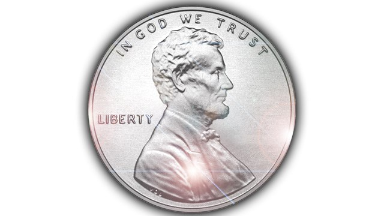

Projects
Research: Adversarial Examples
Starting from Spring 2018, I have been doing research for the IOL (Interactive Optimization and Learning) Laboratory under the ISyE professor Sebastian Pokutta.
My current research focuses on adversarial examples, which are inputs that are perturbed to fool a classifier (for example, an image of a panda has a slight amount of noise added to it and completely throws off a classifier to classify it as a gibbon with 99.3 percent confidence -- see here). I am creating adversarial images of the MNIST dataset to show that random forest classifiers can be fooled (to debunk preexisting beliefs that random forests are quite robust classifiers). Included in my research project are the analysis of the transferability of adversarial examples between classifiers (for example, whether adversarial examples created using a random forest with 100 estimators can successfully fool a random forest with 20 estimators). The project also includes a proposal of an adversarial training algorithm to make general classifiers more robust to adversarial examples.
Home Depot Deep Learning Challenge
This was my first experience in a Deep Learning competition. This challenge involved solving six problems as a team. I worked on the image recognizer and used a two-layer Convolutional Neural Network with Tensorflow to classify chandeliers, shower heads, ceiling fans, vanity lighting, floor lamps and single handle bathroom sing faucets. Below are examples of how the images looked.
To avoid overfitting, we used dropout regularization, which involves certain nodes having a probability of shutting down during each step of the neural network optimization. We ended up with 89% accuracy on the test set.
WeLocate
This project was created at VandyHacks. WeLocate is a website that recommends small businesses to open up. The website was created to locate ice cream stores as a proof of concept that any business can be located in a similar fashion. The team used AWS Machine Learning to train for recommended locations based on data from the Yelp API of the locations of other ice cream stores and Census data on the populations of regions in the United States. I used NodeJS to send a post request when requests were submitted on the page, which would run Python scripts to obtain data and train it using AWS Machine Learning. This was a useful experience in Node and also in Python data manipulation. See more info here.
FiscAlert
This was my first hackathon (HackGT). The team created a fraud-detecter for credit card transaction using an Anomaly Detection algorithm using Java. I created the website using HTML/CSS/JS and used Fetch API to pipe data about whether sample transactions were fraudulent from a text file to a web page. See more info here.
Draggable penny
Below is a glass penny that was manufactured during WW2! More info can be seen here. I used Javascript to give the user of this website the ability to drag the penny.
